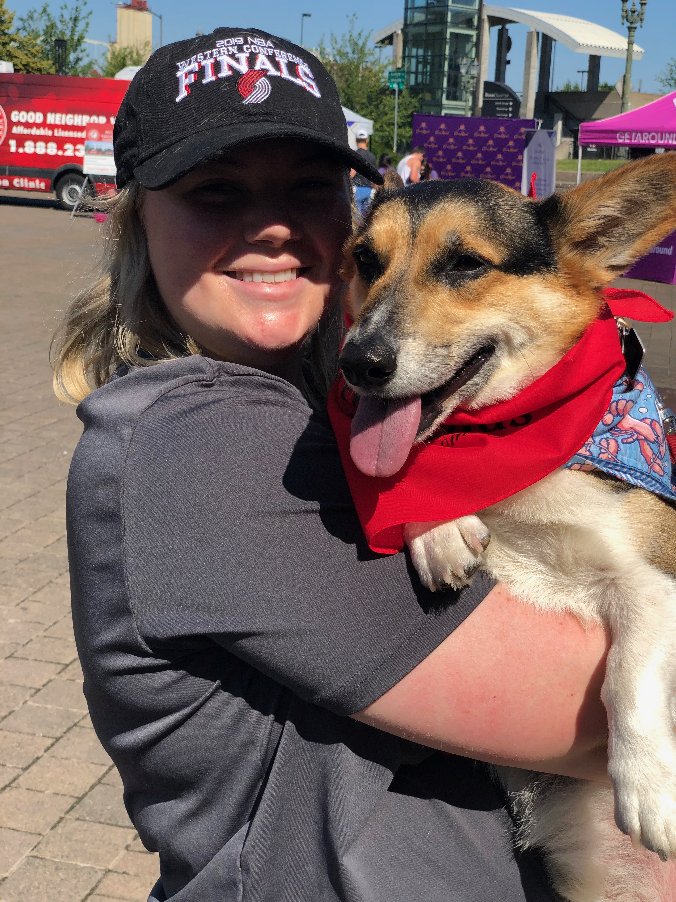

Welcome!
My name is Grace Salmon and I am a Broadcast Production and Management major, with a minor in marketing. I grew up in Southern California and moved to Portland, Oregon my junior year of highschool. My freshman year of college I went to Portland State University in Oregon, and in the Fall of 2017, I transferred to the University of Tennessee at Martin. I am now a senior at UTM and expecting to graduate in the Fall of 2020.
I enjoy riding horses and spending time with my animals. I have 2 Pembroke Welsh Corgis, a Maine Coon cat back at home in Oregon, and a hamster with me at school in Tennessee. UT Martin’s Division One Equestrian team originally drew me to the university, however, UTM has helped me to find interest in Broadcast Production as well as marketing. I have been riding horses from the age of three, and have been competing for just about as long as that. Through my years on the equestrian show circuit, I have been able to experience and learn as much as I could about the equestrian sport. I have worked at several barns up and down the West Coast including Canada, as well as Wisconsin and Kentucky.
With my love of horses, I have expanded my love for the sport through many different avenues, including pursuing an interest in equine Journalism . I have worked with equestrian magazines since high school, like The Plaid Horse Magazine. In working in this industry, I have been able to spread my passion for the equestrian sport throughout the country. I have been able to conduct interviews, write articles, take pictures at some of the top horse shows in the country, and manage and organize both online and blog content. This past summer I expanded my wealth of knowledge and worked as a marketing intern at the corporate office of a well known bakery in the Pacific Northwest. In this role, I was able to create copy, take product photos, work events, and see corporate marketing in action. During my time as a marketing intern I learned that I would love to continue to combine my passions - this time perhaps combining the equestrian sport with my new found passion for marketing.
I have also had a longstanding passion for photography. It first started with taking photos at horse shows for fun, and has blossomed into a small photography business. I now offer Black Background Equine Portraiture and a variety of different types of photo sessions.
With my passion for horses, photography and the more I learn about broadcasting and video, I find that I would love to pursue a career in sports marketing. After I graduate from my undergrad, I have been exploring the idea of getting my masters in something like Strategic Communication. I believe that this graduate degree would help me to further my education and help to combine my learning of all the things I am interested in pursuing post college.